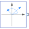

ComplexRotatingPhasorGenerate a phasor with constant magnitude and constant angular velocity of type Complex |

|
Information
This information is part of the Modelica Standard Library maintained by the Modelica Association.
The output y is a complex phasor with constant magnitude, spinning with constant angular velocity.
Parameters (3)
| magnitude |
Value: 1 Type: Real Description: Magnitude of complex phasor |
|---|---|
| w |
Value: 1 Type: AngularVelocity (rad/s) Description: Constant angular velocity of complex phasor |
| phi0 |
Value: 0 Type: Angle (rad) Description: Initial angle of complex phasor at time = 0 |
Connectors (1)
| y |
Type: ComplexOutput Description: Connector of Complex output signal |
|---|
Used in Examples (1)
|
Modelica.Magnetic.QuasiStatic.FundamentalWave.Examples.BasicMachines.SynchronousMachines
Test example: PermanentMagnetSynchronousMachine, investigating maximum torque per Amps |